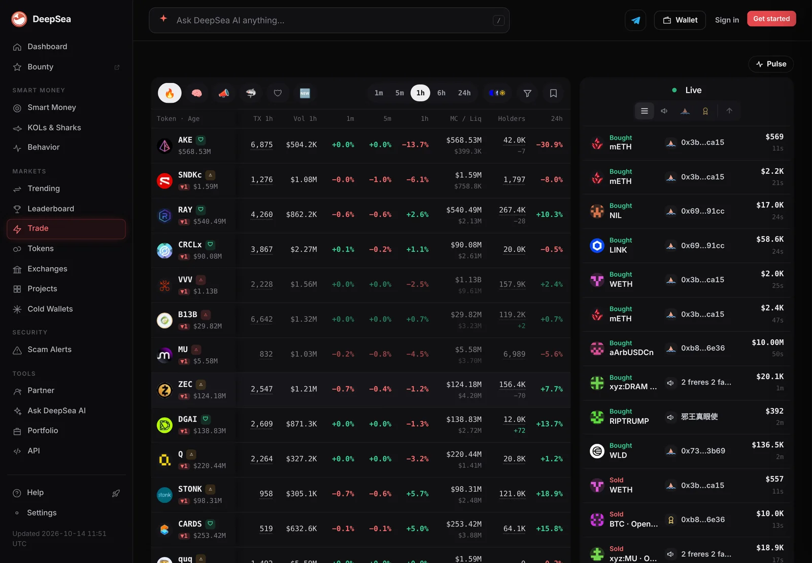
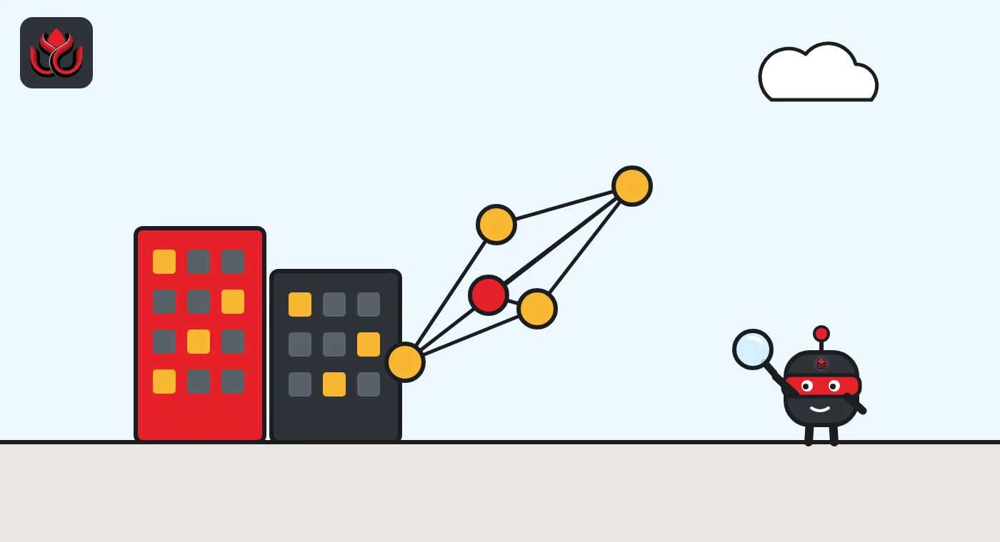
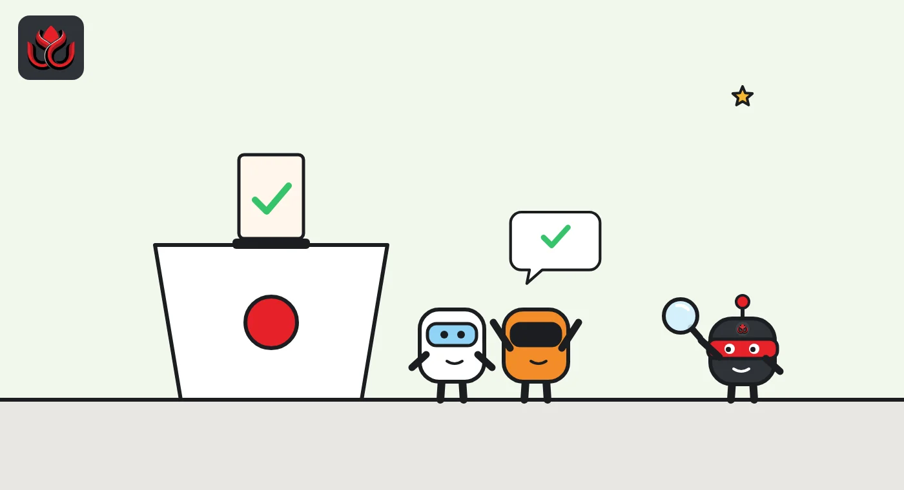

Optimism rewired fault proofs on 4 chains to prepare for interop. Just 0.13% voted no
Upgrade 20 moved OP Mainnet, Ink, Soneium and Unichain to a new dispute game format on September 24, 2026. Interop is still switched off, but the proof system it needs is now in place. Users had nothing to do; some developers and operators did.
Key points
- Upgrade 20 changed contracts on Ethereum with no L2 hard fork. Optimism's notice archive lists September 24, 2026, as its effective date for OP Mainnet, Ink, Soneium and Unichain.
- Fault proofs now use Super Root Dispute Games (game types 5 and 9), the format cross-chain interop needs. Interop itself is not enabled.
- OP holders could have vetoed it with 20% of votable supply. Only 0.13% (71,701 OP) voted against before the window closed on September 16.
 What DeepSea's data shows
What DeepSea's data shows
DeepSea's live snapshot, generated at 11:28 p.m. ET on November 1, listed OP among the tokens that tracked KOL and shark wallets were buying in the previous hour, with OP down 0.5% over 24 hours. Two other Optimism-chain tokens, WLD and USD₮0, appeared in the same list. This is a one-hour window of wallet activity, not a trend, and it says nothing about the upgrade itself. It does show large wallets still active on OP Mainnet weeks after the contract change.

Data: DeepSea (desea.io), checked November 1, 2026, 11:28 p.m. ET.
What happened
Optimism changed how four of its chains prove their state to Ethereum. Upgrade 20, effective September 24, 2026, swapped the dispute games behind the fault proof system, the mechanism that lets anyone challenge a wrong claim about an OP Stack chain before withdrawals to Ethereum are paid out.
The governance proposal, posted on September 10 by Andrea Federici of OP Labs, set a Sepolia testnet run for September 17 and mainnet execution for Thursday, September 24, after a seven-day test period. It covered four chains in one bundled transaction: OP Mainnet, Ink, Soneium and Unichain. Optimism's notice archive, which lists only completed changes, gives September 24 as the effective date of the Upgrade 20 notice.
No hard fork was needed. Every change was a signed transaction on Ethereum, so node operators who only follow the chain did not have to touch their software.
What a Super Root changes
Until now each dispute game committed to one chain's state at a given block number, called an Output Root. That works for a single chain. It does not work for interop, where several chains must agree on their combined state at the same moment.
Super Root Dispute Games fix that. They commit to state by timestamp instead of block number, and the format can hold several chains at once. The notice says each new game still contains only one chain's Output Root for now. The upgrade does not run the migration step that would put chains on a shared dispute setup, and each chain keeps its own registry and game factory.
Two new game types arrived. SUPER_CANNON_KONA (type 9) is now the respected type on permissionless chains, replacing CANNON_KONA (type 8). SUPER_PERMISSIONED (type 5) serves chains that still restrict who can post proposals. The proposal says the permissioned version was simplified: it resolves in favor of the proposer at once, but still waits out the delay before funds can move, and a Guardian role can blacklist a bad proposal.
The timestamp approach also removes a separate challenge step that checked block numbers, which the proposal says makes the games simpler.

The vote and the audit
This was an optimistic approval: the proposal passes unless 20% of votable OP votes against it. The onchain vote page shows the window ended on September 16 with 0.13% of votable supply, or 71,701 OP, against. The page lists the proposal as succeeded.
On security, the proposal says Spearbit and Cantina audited the full contract diff since the previous release, with a fix review, and the audit closed on August 21. The new games reuse the core logic of the already audited FaultDisputeGame contract.
Upgrade 20: votes against vs. veto threshold
% of votable OP
Source: Optimism Agora vote page
Who had to do something
- Users: nothing. Withdrawal proofs filed before the upgrade stay valid and do not need to be proven again. The OptimismPortal contract accepts both the old and new formats.
- App developers: ordinary contracts and transactions are unaffected. Apps that prove withdrawals with viem must move to version 2.51.0 or later and pass a block timestamp. Code that reads dispute games directly must recognize types 5 and 9.
- Bridges and tooling: two SystemConfig functions, batchInbox() and an old setGasConfig call, now revert. The overhead() getter returns zero.
- Chain operators: they had to switch their proposer to a new Super Root endpoint at the moment of cutover and update their challenger and monitoring tools beforehand.

Timeline
Spearbit/Cantina audit workflow closes
OP Labs posts the Upgrade 20 proposal
Veto window closes with 0.13% against
Target execution on OP Sepolia, Ink Sepolia, Soneium Minato, Unichain Sepolia
Mainnet execution date for OP Mainnet, Ink, Soneium, Unichain
Why it matters for interop
Interop means letting OP Stack chains pass messages and assets to each other natively, and Upgrade 20 exists to prepare for it. The proposal's own logic is that moving every chain to the new games now, while each game still covers one chain, means the later upgrade that turns on interop will not have to touch the dispute system at the same time.
Upgrade 20 also tidied the upgrade path. OP Contracts Manager v8.0.0 now refuses to run unless a chain's previous upgrade came from a 7.x version, which the proposal says should cut the risk of errors in future upgrades.
LC Insight analysis
This section is our reading of the facts above, not a statement of fact.
- We think splitting the work this way is sensible risk management. Changing the proof format and switching on cross-chain messaging in one step would stack two failure points on the contracts that guard withdrawals.
- The vote numbers show how little OP holders engage with technical upgrades. With 0.13% voting to veto, the main checks here were the audit and the testnet run, not token holders.
- The likely next step is an interop upgrade that moves chains onto a shared dispute setup. Until that ships with a date, interop remains a roadmap item rather than a product.
What's next
- A governance proposal that actually enables OP Stack interop
- Migration of chains to a shared dispute game setup
- Whether other OP Stack chains outside the Security Council set adopt the new games
- Withdrawal tooling bugs from apps that did not update viem
Disclaimer. This article is based on public information and the sources listed below as of the update time shown. It is for information only and is not investment, legal or tax advice. Figures may change as companies and authorities publish new data.